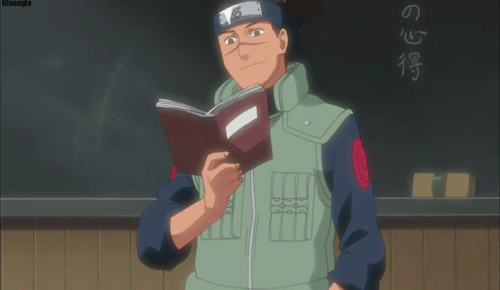
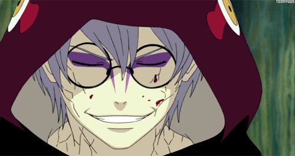
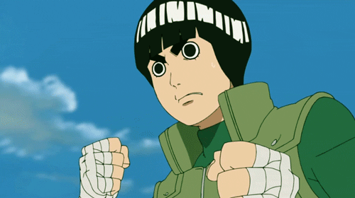
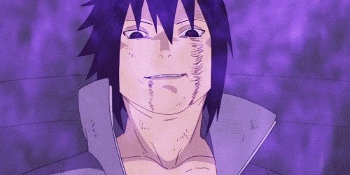

ТОП-10 САМЫХ МОЩНЫХ ПЕРСОНАЖЕЙ «НАРУТО». ЧАСТЬ 1
В мире «Наруто» не происходит ничего сверхважного/нового, а оставлять эту ниндзя-вселенную позади – не вариант. Выход только один: ностальгировать и выбирать десятку самых невозмутимо крутых героев сериала. И пока в редакции идут баталии на тему того, кто достоин почета больше остальных, мы публикуем первую часть топа. Начинайте выбирать свой путь ниндзя!
Мощь, влиятельность, популярность, скилы ниндзя – это, конечно, круто. Но куда важнее, если верить философам, цитатам в соцсетях и нашему аниме-опыту, – то, что внутри. Так что главным критерием этого топа мы торжественно объявляем глубокий внутренний мир героев и их личные истории. Потому что "Наруто" без драмы и накала страстей – не "Наруто".
10. ИРУКА УМИНО
Обычный парень с большим сердцем, полным понимания, сострадания, доброты и вот этой всей милоты, которая обязательно живет в каждом положительном герое детских сказок. Ирука был первым, кто увидел в Наруто маленького уязвимого мальчика, которому нужна была забота, и начал опекать его как собственного сына. Все это становится особо ценным, если вспомнить, что девятихвостый лис, живущий в Наруто, убил родителей Ируки.
Слезовышибательный и слегка мимимишный Умино получает место в списке хотя бы за то, что стал для Наруто мудрым наставником по жизни и научил его верить в себя. Благородство – вот что действительно важно!
9. КАБУТО ЯКУШИ
Кабуто – ходячий тлен, трагизм и коварство. Воспитанный в Детском Доме Конохи парень в результате стал шпионом, настоящим bad-ass’ом и мастерским манипулятором, способным обвести вокруг пальца любого. Эта игра заставила его задаться сакральным вопросом о том, кто он, собственно, такой. Кабуто, прислушавшись к словам Орочимару, эволюционировал от друга до врага, пережив кучу моральных и физических сломов и попутно используя свою силу для уничтожения пары-тройки великих Шиноби.
8. РОК ЛИ
Второй главный толстобров мира аниме после Гая, самый упоротый упорный и трудолюбивый из ниндзя, Рок Ли все эти годы вызывал у нас экстаз, желание прикупить зеленый костюмчик и сделать шикарную прическу. Будучи от рождения розовым слоненком, обделенным ниндзя-скиллами и окруженным великими мастерами из знатных семей, Рок Ли страдал и отважно боролся за свое счастье.
Упорство, терпение и труд сделали его тем самым альфа-самцом, который должен быть примером и идолом для каждого. Ли, ты наш герой!
7. САСКЕ УЧИХА
Лучший друг и злейший враг Наруто, Саске – настоящая сила и мощь всей истории. Его тоскливое прошлое, конечно, дало ему повод быть холодным и непробиваемым. Но в конце концов дарксайд одолел его и превратил в главного злодея, который предал всех, кто его любил. С детства он владел искусством ниндзя на продвинутом левеле (в отличие от бровастого Рока Ли), что в итоге заставило его гордиться собой на уровне over 9000.
Именно надменность, ставшая его главной чертой, забрала у Наруто близкого друга, а у Сакуры – возлюбленного. Саске всегда чувствовал, что он и только он должен быть Хокаге, а единственный путь привести людей к миру – крушить и разрушать устои ("перемен требуют наши сердца") . Стоит ли говорить о том, сколько женских сердец разбил этот взгляд...
Так почему, черт возьми, Саске только на 7 месте? Потому что даже 8-летние дети иногда не понимали, откуда у него внезапно появлялись суперсилы и могущество. Мы этот момент тоже не поняли.
